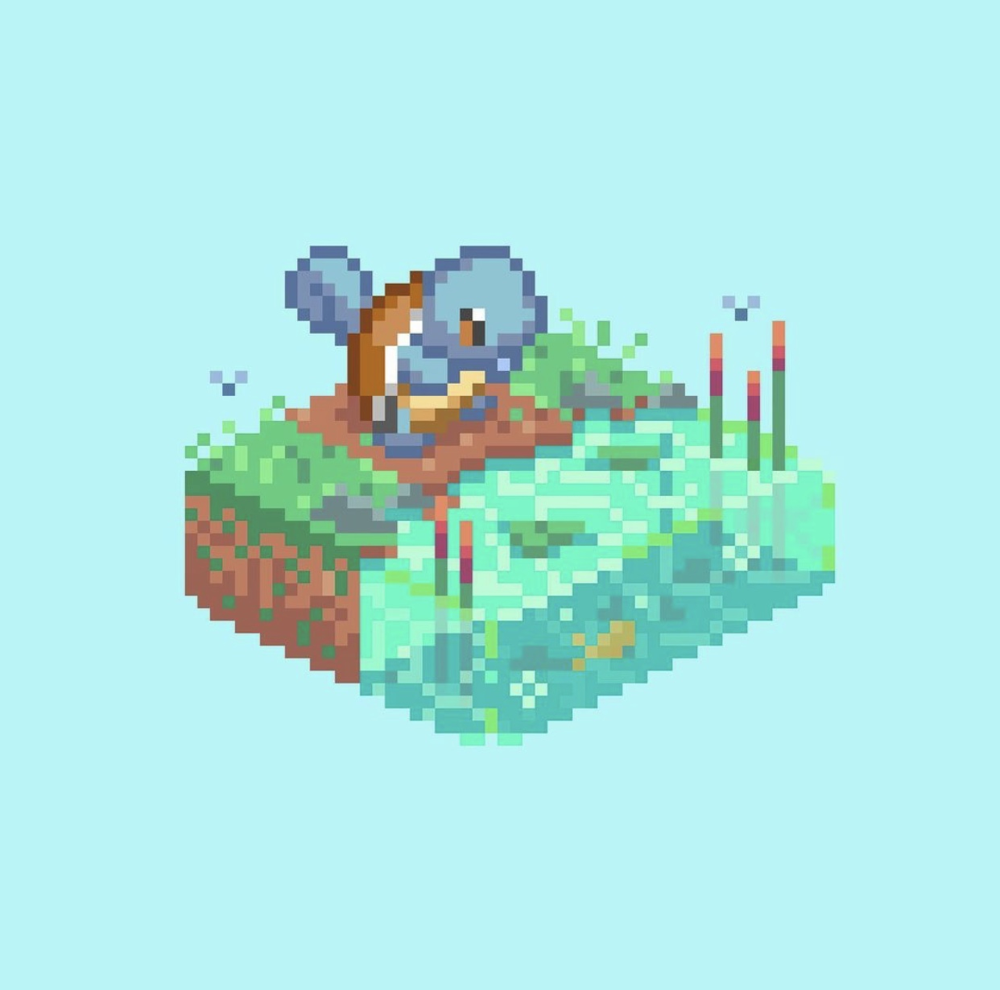
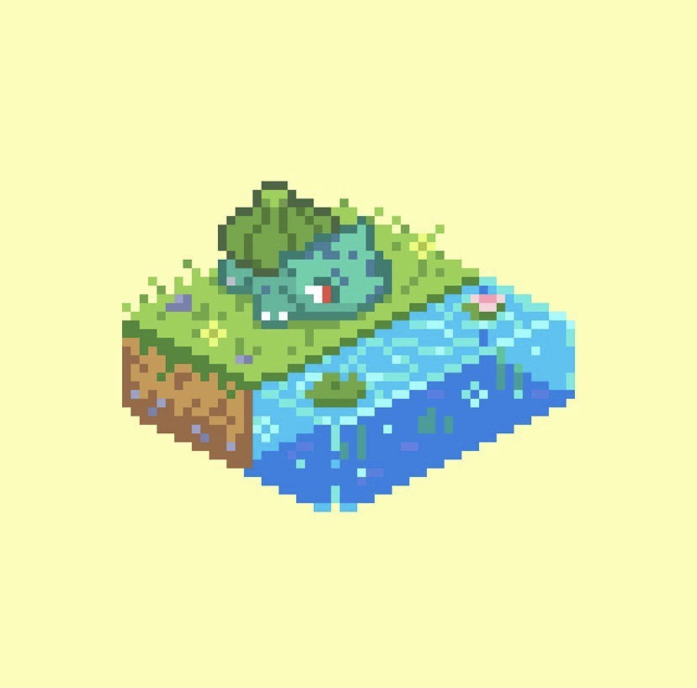

Squirtle
Squirtle é baseado em uma tartaruga marinha. Tem uma pele azul claro e usa um casco e junto também tem uma calda longa azul. Squirtle é um Pokémon do tipo Water. Squirtle é um dos três Pokémon iniciais de Kanto, assim como Bulbasaur e Charmander. Ele evolui para Wartortle no nível 16, que então evolui para Blastoise no nível 36.
Bulbasaur
Bulbasaur é uma criatura quadrúpede réptil que lembra um dinossauro jovem, com um azul-verde manchado. Ele tem três garras crescendo fora de suas quatro pernas, e seus olhos são de um vermelho brilhante. É um Pokémon do tipo Planta e Venenoso e ele evolui para Ivysaur a partir do nível 16, e para Venusaur a partir do nível 32.
Charmander
.jpg)
Charmander é uma criatura reptiliana laranja semelhante a uma salamandra com algumas qualidades de dinossauros, como os de terópodes. Charmander tem quatro pequenas presas visíveis em sua parte superior e mandíbulas inferiores. Ele evolui para Charmeleon quando chega no nivel 16 e para Charizard no nivel 36.
.jpg)